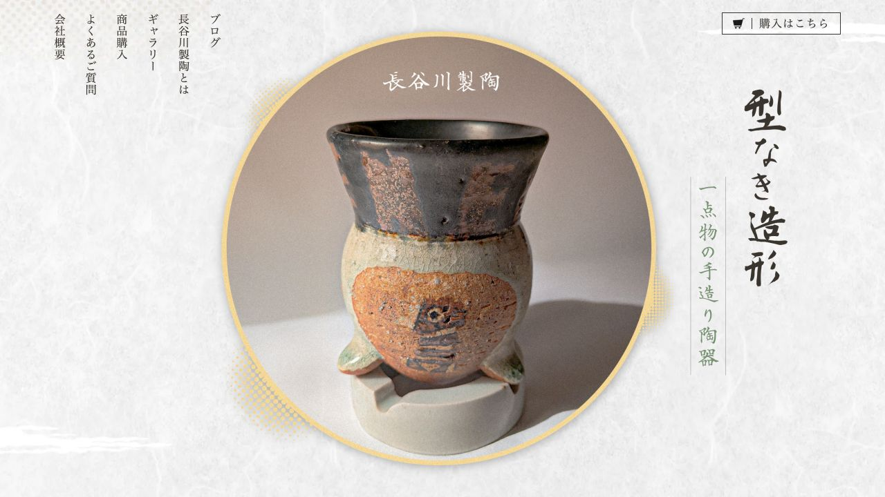
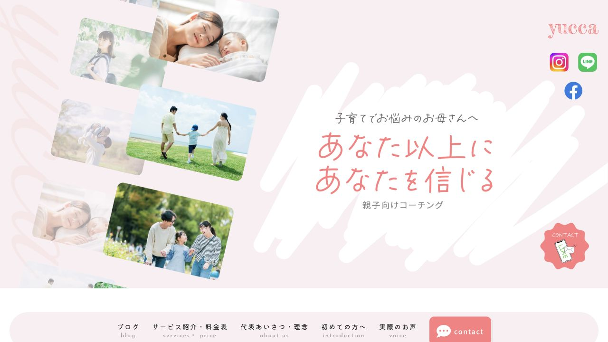
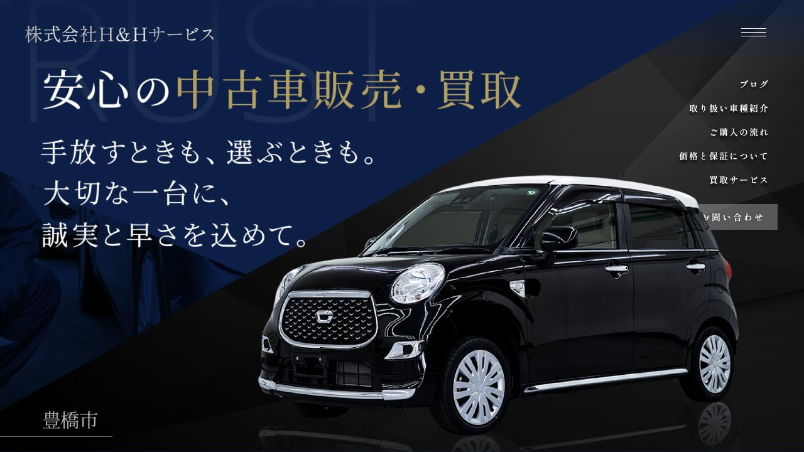

WEB DESIGN VOL. 01 / 2026
HYO’SPORTFOLIO.

HASEGAWA SEITO
YUCCA
H&H SERVICEHYO / WEB DESIGNSCROLL TO EXPLORE ↓
01 / WORKS
担当範囲と表現の幅がわかる6件。
Works
06 / 11各作品から、担当範囲・デザインの特徴・公開サイトをご覧いただけます。
02 / ABOUT HYODESIGN × CODE
HYO.
Web designer.
業種に合わせて、
見せ方を組み立てる。
2024年8月に株式会社WeeAreへWebデザイナーとして入社。2026年1月まで、主にLP・HP・SNSバナーのデザインとコーディングを担当しました。その後、2026年2〜5月はWebディレクター、同年6〜9月はカスタマーサクセス課を経験しました。
掲載した11件のWebサイトでは、主にTOPページのデザインとコーディングを担当しました。下層ページは主にCMSで構築しました。美容、建設、教育、カウンセリングなど、さまざまな業種の制作経験があります。
株式会社WeeAre
Webデザイナー
LP・HP・SNSバナーのデザインを担当。
Webサイトでは主にTOPページのデザイン・コーディングに対応。下層ページは主にCMSで構築。
Webディレクター
カスタマーサクセス課
- AiAdobe Illustrator
- PsAdobe Photoshop
- FiFigma
- XdAdobe XD
希望職種：Webデザイナー
03 / PROJECT INDEX11 WEBSITES